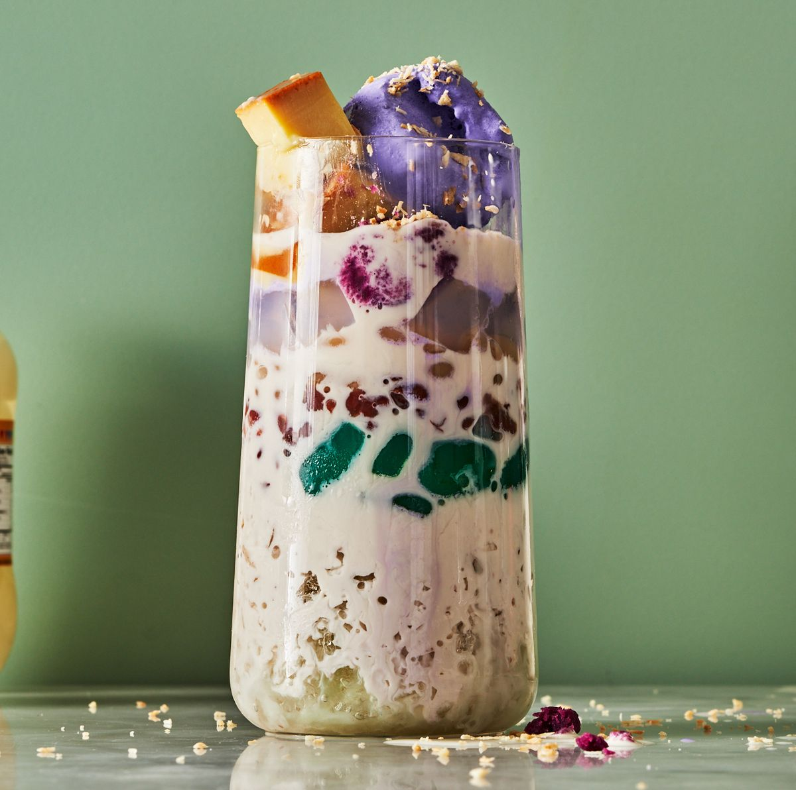

A culinary masterpiece!
The name means "mix-mix" which describes how it's made and how it should be eaten.
Halo-Halo is an artful medley of sweet, cooling, and satisfying components.
With every spoonful, you embark on a journey of flavors, textures, and temperatures that dance on your palate.
It's a dessert that's as colorful and vibrant as the Philippines itself.